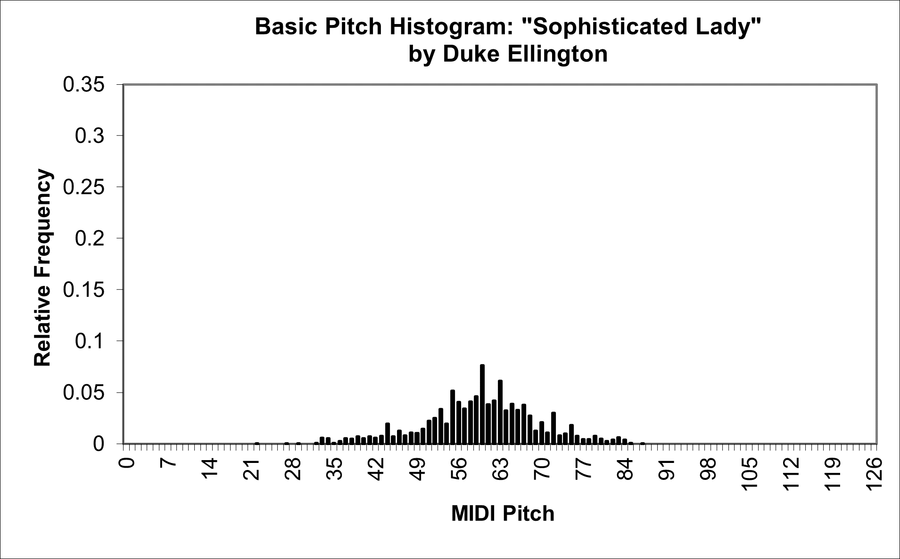
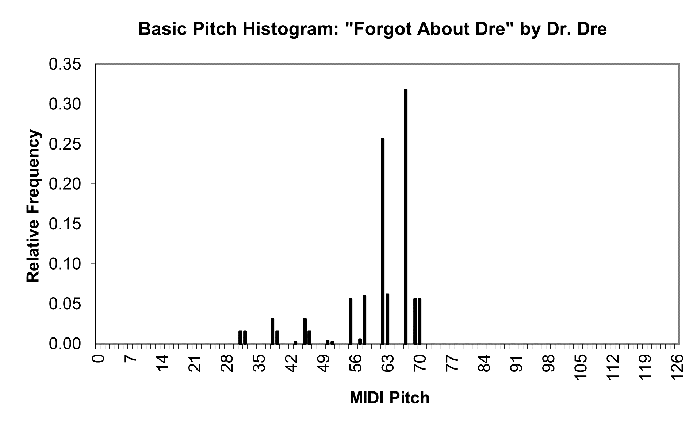
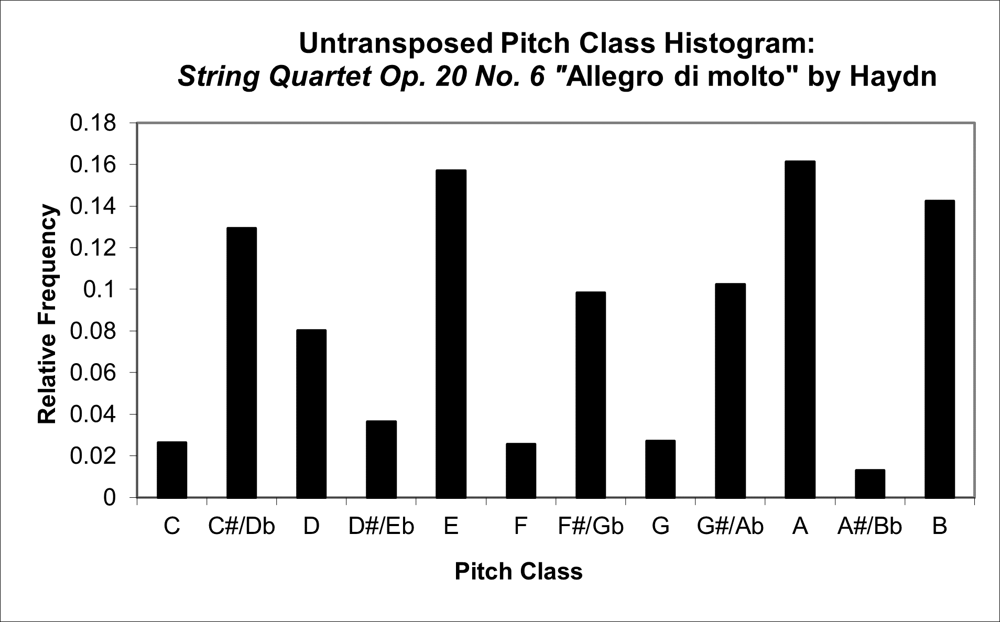
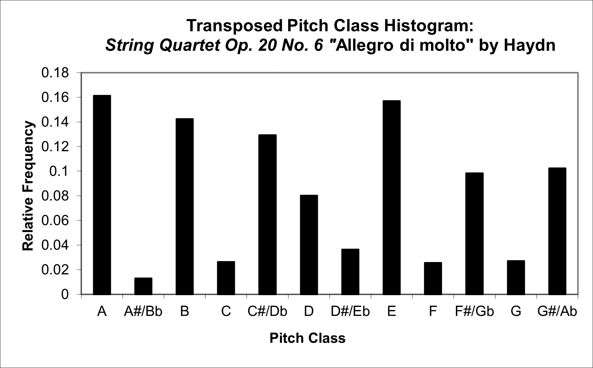

| Feature Explanations: Overall Pitch Statistics |
GENERAL NOTES
The majority of traditional analytical systems place a particular emphasis on information related to pitch and, as one would expect, this type of information certainly has important value with respect to symbolic features as well. jSymbolic's P-class features, which are described on this page, focus on overall statistics describing the pitches present in a piece of music (or sub-section) as a whole, without regard to the temporal location of notes in relation to one another (features that do, in contrast, account for the context of notes and their pitches are described in the sections of this manual related to other feature types, especially the sections on melody + melodic intervals and on chords + vertical intervals).
One particularly useful approach to calculating statistical features in general is to construct histograms. A histogram consists of a set of bins, each associated with some related measurable quantity, where each bin has a magnitude (or "frequency") indicating the particular measurement for that bin. For example, one possible type of histogram could have a bin for each pitch, where the frequency of each bin indicates how often the corresponding pitch occurs in a piece of music (or sub-section). The bin frequency values of such a histogram can be represented as a single multi-dimensional feature (a "feature vector"), and can also be used as the basis for calculating other features, as seen in many of the features described below. The jSymbolic histograms related to overall pitch statistics were originally inspired by the three pitch histograms implemented by Tzanetakis and his colleagues (Tzanetakis and Cook 2002; Tzanetakis, Ermolinskyi and Cook 2002; Tzanetakis 2002). These histograms are used as the basis for constructing some (but certainly not all) of the features described in this section of the manual.
The first type of histogram calculated by jSymbolic is the basic pitch histogram. As implemented in jSymbolic, it consists of 128 bins, one for each MIDI pitch (numbered 0 to 127, where middle C, or C4, is MIDI pitch 60, and a MIDI pitch difference of 1 corresponds to a single semitone). The frequency value of each bin of the basic pitch histogram is first set to the number of MIDI Note On messages in the piece with the corresponding pitch (i.e. the number of note onsets with the bin's pitch), and the histogram is then normalized after all Note On messages have been accounted for. The result is a histogram where each bin's magnitude indicates the proportion of notes in the music being analyzed that have the pitch corresponding to that bin. This type of histogram gives particular insights into the range and variety of pitches used in a piece. To provide practical examples, the first figure below shows the basic pitch histogram for a Duke Ellington jazz piece, and the second shows the histogram for a Dr. Dre rap song. A number of genre-typical differences are immediately apparent from even a rough visual comparison of these two histograms, such as the fact that the rap song uses far fewer pitches than the jazz piece, for example.


The second type of histogram calculated by jSymbolic is called a pitch class histogram. It has one bin for each of the twelve enharmonic pitch classes, which means that it is essentially a version of the basic pitch histogram where octaves are collapsed for each of the pitch classes. The magnitude of each bin is set to the number of MIDI Note On messages with a MIDI pitch that can be wrapped to the bin's corresponding pitch class, with enharmonic equivalents assigned to the same pitch class number. The histogram is normalized. There are two versions of this pitch class histogram calculated by jSymbolic: one untransposed version, where each bin is set to a fixed pitch class (bin 0 corresponds to C, bin 1 to C#/Db, bin 2 to D, etc.), and a second transposed version where the bins are translated so that the first bin corresponds to the pitch class with the highest magnitude. In both cases, successive bins are ordered in increasing semitone increments. For example, the graphs below show the two pitch class histograms for a movement of a Haydn string quartet: the first (untransposed) histogram shows the relative pitch class frequencies for the quartet, and the second (transposed) histogram shows the exact same pitch class frequencies but reordered such that the pitch class of the first bin corresponds to the most common pitch class (A in this case, which non-coincidentally is also the key of this movement). Pitch class histograms provides insights into areas such as the types of scales used and the amount of transposition that is present, for example. The untransposed version allows direct comparisons based on absolute pitch class, and the transposed version allows comparisons that can be key-invariant, very roughly speaking (although a much more sophisticated key-finding algorithm than simply selecting the most common pitch class would be necessary for truly key-invariant comparisons, this approach does have the advantage of greater generality, since it does not assume that the music is actually tonal at all, which it may well not be, given the broad scope of music jSymbolic is designed to be appropriate for).


The third type of histogram is called a folded fifths pitch class histogram, and is derived directly from the pitch class histogram. This histogram is calculated by reordering the bins of the untransposed pitch class histogram such that adjacent bins are separated by perfect fifths rather than semitones. This is done using the following equation:
B = (7a)mod(12)
where B is the folded fifths pitch histogram bin index and a is the corresponding untransposed pitch class histogram bin index. The number seven is used because this is the number of semitones in a perfect fifth, and the number twelve is used because there are twelve pitch classes in total (an octave). This histogram is useful for measuring dominant-tonic relationships and for looking at types of transpositions.
The utility of the folded fifths pitch class histogram can be seen by comparing the first figure below, which shows the folded fifths pitch class histogram for the same Haydn string quartet movement introduced above (note how the bin frequencies are unchanged from the pitch class histograms above, but the bin ordering is entirely different), with the second figure below, which shows the folded fifths pitch class histogram for an atonal Schoenberg song/poem. Note how five of the twelve pitch classes are used relatively sparsely in the Haydn piece, and the pitch classes that are most used tend to be clustered in the context of the circle of fifths (with the highest-magnitude bin being A, the key of the piece, followed by the adjacent bin E, A's dominant, and then by the adjacent bin B, A's supertonic). These are characteristics that one would typically expect of basic tonal music without many tonally distant modulations or substantial use of chromaticism. In contrast, all of the pitch classes are used to a reasonable extent in the Schoenberg piece, and the most frequently used pitch classes are not particularly clustered together on the circle of fifths, both of which are characteristics that one would expect of such atonal music like this.


All of the histogram types introduced above are included directly as features in the jSymbolic feature catalogue, and are also used as intermediate representations to calculate a number of other features, which introduces an important issue: part of the challenge of histogram-based features is finding good ways to distill useful information embedded in them, and representing this information as features. Although histograms like those described above certainly can be used directly as feature vectors, and they are in jSymbolic, experience has shown that machine learning algorithms can sometimes (but not always) have trouble learning to extract useful information from them in this raw form. Fortunately, there is a good body of work in the statistical literature on extracting information from histograms; for example, the two highest peaks of histograms can tend to be of particular importance, and thus serve as a basis for calculating a number of derivative features. Many of the features described individually below are informed by such insights from the statistical literature. Of course, many of the features below are also calculated in ways entirely independent of any of the pitch-related histograms.
As suggested above, many of the jSymbolic features represent pitch as MIDI does, with 128 pitches (numbered 0 to 127), with middle C set at note 60, and with each unit up or down corresponding to a semitone. A disadvantage with this approach, of course, is that enharmonic equivalents are assigned the same pitch number. Although this is not ideal, as it involves the loss of some potentially useful information, it is unavoidable given the need to be able to parse MIDI files and compare features extracted from MIDI files with features extracted from files in more pitch-expressive formats such as MEI. Fortunately, most of the jSymbolic features are not impacted by this loss of information. If one wishes to exclusively extract features from formats such as MEI that do distinguish between enharmonic equivalents, then jSymbolic can still potentially be used to do so, although one would need to first implement MEI-specific features that take advantage of jSymbolic's existing pipeline of MEI-specific data.
It should also be mentioned that all notes occurring on MIDI Channel 10 are ignored for all of the features described in this section. This is because the "pitch" values on Channel 10 correspond to (mostly unpitched) percussion instruments, not to actual pitches.
Some of the features in this section are based on MIDI Pitch Bends. Although the use of Pitch Bends is somewhat variable from MIDI encoder to MIDI encoder, and therefore particularly sensitive to inconsistent encoding practices, features relating to Pitch Bends can nonetheless have a high discriminating power, so they are included here so that they can be used when consistently encoded data is available. Efforts were made to use features with as limited a sensitivity to encoding bias as possible.
JSYMBOLIC FEATURE CATALOGUE (OVERALL PITCH STATISTICS SECTION)
- P-1 Basic Pitch Histogram: A feature vector consisting
of bin magnitudes of the basic pitch histogram described above. Each bin corresponds
to one of the 128 MIDI pitches, ordered from lowest to highest, and with an
interval of a semitone between each (enharmonic equivalents are assigned the
same pitch number). Bin 60 corresponds to middle C. The magnitude of of each
bin is proportional to the the number of times notes occurred at the bin's
pitch in the piece, relative to all other pitches in the piece (the histogram
is normalized).
- P-2 Pitch Class Histogram - Untransposed: A feature vector consisting
of bin magnitudes of the pitch class histogram described above. Each bin corresponds
to one of the 12 pitch classes, with bin 0 corresponding to C and pitch classes increasing by a semitone from one bin to the next (enharmonic equivalents are assigned the same pitch
class number).
For example, bin 3 corresponds to D#/Eb. The magnitude of of each bin is proportional to the the number of times notes
occurred at the bin's pitch class in the piece, relative to notes of all other pitch
classes in the piece (the histogram is normalized).
- P-3 Pitch Class Histogram - Transposed: A feature vector consisting
of bin magnitudes of the pitch class histogram described above. Each bin corresponds
to one of the 12 pitch classes, with pitch classes increasing by a semitone from one bin to the next (enharmonic equivalents are assigned the same pitch
class number). The first bin corresponds to the most common pitch class in
the piece under consideration (and therefore does NOT necessarily correspond to the same pitch class when extracted from different pieces).
The magnitude of of each bin is proportional to the the number of times notes
occurred at the bin's pitch class in the piece, relative to notes of all other pitch
classes in the piece (the histogram is normalized).
- P-4 Folded Fifths Pitch Class Histogram: A feature vector
consisting of bin magnitudes of the folded fifths pitch class histogram described
above. Each bin corresponds to one of the 12 pitch classes, and the bins are
ordered such that adjacent bins are separated by an ascending perfect fifth.
Bin 0 corresponds to C. Enharmonic equivalents are assigned the same pitch
class number. The magnitude of of each bin is proportional to the the number
of times notes occurred at the bin's pitch class in the piece, relative to
all other pitch classes in the piece (the histogram is normalized).
- P-5 Number of Pitches: Number of unique pitches that occur
at least once in the piece. Enharmonic equivalents are grouped together for
the purpose of this calculation.
- P-6 Number of Pitch Classes: Number of pitch classes that
occur at least once in the piece. Enharmonic equivalents are grouped together
for the purpose of this calculation.
- P-7 Number of Common Pitches: Number of unique pitches
that account individually for at least 9% of all notes. Enharmonic equivalents
are grouped together for the purpose of this calculation.
- P-8 Number of Common Pitch Classes: Number of pitch classes
that account individually for at least 20% of all notes. Enharmonic equivalents
are grouped together for the purpose of this calculation.
- P-9 Range: Difference in semitones between the highest
and lowest pitches.
- P-10 Lowest Pitch:
MIDI pitch of the lowest pitch in the piece. Set to zero if there are no pitched notes.
- P-11 Highest Pitch: MIDI pitch of
the highest pitch in the piece. Set to zero if there are no pitched notes.
- P-12 Importance of Bass Register: Fraction of notes between
MIDI pitches 0 and 54.
- P-13 Importance of Middle Register: Fraction of notes between
MIDI pitches 55 and 72.
- P-14 Importance of High Register: Fraction of notes between
MIDI pitches 73 and 127.
- P-15 Dominant Spread: Largest number of consecutive pitch
classes separated by perfect 5ths that each individually account for at least
9% of the total notes in the piece.
- P-16 Strong Tonal Centres: Number of isolated peaks in
the fifths pitch histogram that each individually account for at least 9%
of all notes in the piece.
- P-17 Mean Pitch: Mean MIDI pitch value, averaged across
all pitched notes in the piece. Set to 0 if there are no pitched notes.
- P-18 Mean Pitch Class: Mean pitch class value, averaged
across all pitched notes in the piece. A value of 0 corresponds to a mean
pitch class of C, and pitches increase chromatically by semitone in integer
units from there (e.g. a value of 2 would mean that D is the mean pitch class).
Enharmonic equivalents are treated as a single pitch class.
- P-19 Most Common Pitch: MIDI pitch value of the most frequently
occurring pitch.
- P-20 Most Common Pitch Class: The pitch class that occurs
most frequently compared to other pitch classes. A value of 0 corresponds
to C, and pitches increase chromatically by semitone in integer units (e.g.
a value of 2 would mean that D is the most common pitch class). Enharmonic
equivalents are treated as a single pitch class.
- P-21 Prevalence of Most Common Pitch: Fraction of notes
that correspond to the most common pitch.
- P-22 Prevalence of Most Common Pitch Class: Fraction of
notes that correspond to the most common pitch class.
- P-23 Relative Prevalence of Top Pitches: Relative frequency
of the second most common pitch in the piece, divided by the relative frequency
of the most common pitch.
- P-24 Relative Prevalence of Top Pitch Classes: Relative
frequency of the of the second most common pitch class in the piece, divided
by the relative frequency of the most common pitch class.
- P-25 Interval Between Most Prevalent Pitches: Absolute
value of the difference (in semitones) between the pitches of the two most
frequently occurring pitches.
- P-26 Interval Between Most Prevalent Pitch Classes: Absolute
value of the difference (in semitones) between the pitches of the two most
frequently occurring pitch classes.
- P-27 Pitch Variability: Standard deviation of the MIDI
pitches of all pitched notes in the piece. Provides a measure of how close
the pitches as a whole are to the mean pitch.
- P-28 Pitch Class Variability: Standard deviation of the
pitch classes (where 0 corresponds to C, 1 to C#/Db, etc.) of all pitched
notes in the piece. Provides a measure of how close the pitch classes as a
whole are to the mean pitch class.
- P-29 Pitch Class Variability After Folding: Standard deviation
of the pitch classes in the piece after being folded by perfect fifths as
described for the folded fifths pitch class histogram. Provides a measure
of how close the pitch classes are as a whole from the mean pitch class from
a dominant-tonic perspective.
- P-30 Pitch Skewness: Skewness of the MIDI pitches of all
pitched notes in the piece. Provides a measure of how asymmetrical the distribution is: a value of zero indicates a symmetrical distribution, a negative value indicates a left skew and a positive value indicates a right skew.
- P-31 Pitch Class Skewness: Skewness of the pitch classes
(where 0 corresponds to C, 1 to C#/Db, etc.) of all pitched notes in the piece.
Provides a measure of how asymmetrical the distribution is: a value of zero indicates a symmetrical distribution, a negative value indicates a left skew and a positive value indicates a right skew.
- P-32 Pitch Class Skewness After Folding: Skewness of the
pitch classes after being folded by perfect fifths as described for the folded
fifths pitch class histogram. Provides a measure of how asymmetrical the distribution is: a value of zero indicates a symmetrical distribution, a negative value indicates a left skew and a positive value indicates a right skew.
- P-33 Pitch Kurtosis: Excess kurtosis of the MIDI pitches of all
pitched notes in the piece. A higher kurtosis means that the tails are fatter and a lower kurtosis means that they are skinnier. A normal distribution has a value of 0. A distribution with a higher kurtosis is more likely to have extreme values.
- P-34 Pitch Class Kurtosis: Excess kurtosis of the pitch classes
(where 0 corresponds to C, 1 to C#/Db, etc.) of all pitched notes in the piece.
A higher kurtosis means that the tails are fatter and a lower kurtosis means that they are skinnier. A normal distribution has a value of 0. A distribution with a higher kurtosis is more likely to have extreme values.
- P-35 Pitch Class Kurtosis After Folding: Excess kurtosis of the
pitch classes after being folded by perfect fifths as described for the folded
fifths pitch class histogram. A higher kurtosis means that the tails are fatter and a lower kurtosis means that they are skinnier. A normal distribution has a value of 0. A distribution with a higher kurtosis is more likely to have extreme values.
- P-36 Key Signature Diversity: The number of different (unique) key signatures found in the piece. Set to 1 if no key signature is specified.
- P-37 Pitch Deviation from First Key Signature: The fraction of notes in the piece that do not belong to one of the 7 pitch classes specified by the first key signature in the piece. 0 if there is no key signature specified in the piece.
- P-38 Pitch Deviation from Key Signature: The fraction of notes in the piece that do not belong to one of the 7 pitch classes specified by the key signature in effect at the time that they occur. 0 if there is no key signature specified in the piece.
- P-39 Major or Minor: Whether the piece is major or minor,
as indicated by the first encountered major/minor metadata tag in the piece.
Set to 0 if the metadata indicates that the piece is major, or set to 1 if
the metadata indicates that it is minor. Defaults to 0 if the key signature
is unknown.
- P-40 Number of Flats in First Key Signature:
The number of flats in the first key signature appearing in the piece. Set
to 0 if no key signatures are specified or if the first key signature does
not have any flats.
- P-41 Number of Sharps in First Key Signature:
The number of sharps in the first key signature appearing in the piece. Set
to 0 if no key signatures are specified or if the first key signature does
not have any sharps.
- P-42 First Pitch: The MIDI pitch value of the first note
in the piece. If there are multiple notes with simultaneous attacks at the
beginning of the piece, then the one with the lowest pitch is selected. Set to 0 if there are no
pitched notes.
- P-43 First Pitch Class: The pitch class of the first note
in the piece. If there are multiple notes with simultaneous attacks at the
beginning of the piece, then the one with the lowest pitch is selected. A
value of 0 corresponds to C, and pitches increase chromatically by semitone
in integer units (e.g. a value of 2 would mean that D is the most common pitch
class). Enharmonic equivalents are treated as a single pitch class. Set to
0 if there are no pitched notes.
- P-44 Last Pitch: The MIDI pitch value of the last note
in the piece. If there are multiple notes with simultaneous attacks at the
end of the piece, then the one with the lowest pitch is selected. Set to 0
if there are no pitched notes.
- P-45 Last Pitch Class: The pitch class of the last note
in the piece. If there are multiple notes with simultaneous attacks at the
end of the piece, then the one with the lowest pitch is selected. A value
of 0 corresponds to C, and pitches increase chromatically by semitone in integer
units (e.g. a value of 2 would mean that D is the most common pitch class).
Enharmonic equivalents are treated as a single pitch class. Set to 0 if there
are no pitched notes.
- P-46 Glissando Prevalence: Number of pitched MIDI Note
Ons that have at least one MIDI Pitch Bend associated with them, divided by
the total number of pitched Note Ons in the piece.
- P-47 Average Range of Glissandos: Average range of MIDI
Pitch Bends, where "range" is defined as the greatest value of the
absolute difference between 64 and the second data byte of all MIDI Pitch
Bend messages falling between the Note On and Note Off messages of any note
in the piece. Set to 0 if there are no MIDI Pitch Bends in the piece.
- P-48 Vibrato Prevalence: Number of pitched notes that have
associated MIDI Pitch Bend messages change direction at least twice in connection
with the note in question, divided by the total number of pitched Note Ons
in the piece.
- P-49 Microtone Prevalence: Number of pitched notes that
are each associated with exactly one MIDI Pitch Bend message, divided by the
total number of pitched Note Ons in the piece. Set to 0 if there are no pitched
Note Ons in the piece.
-top of page-